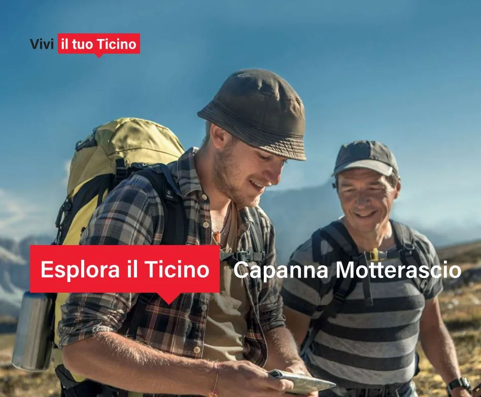
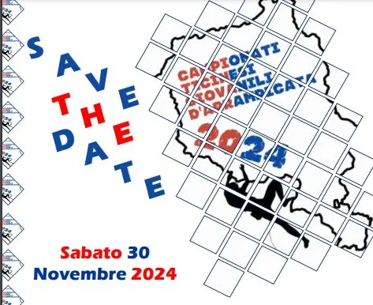
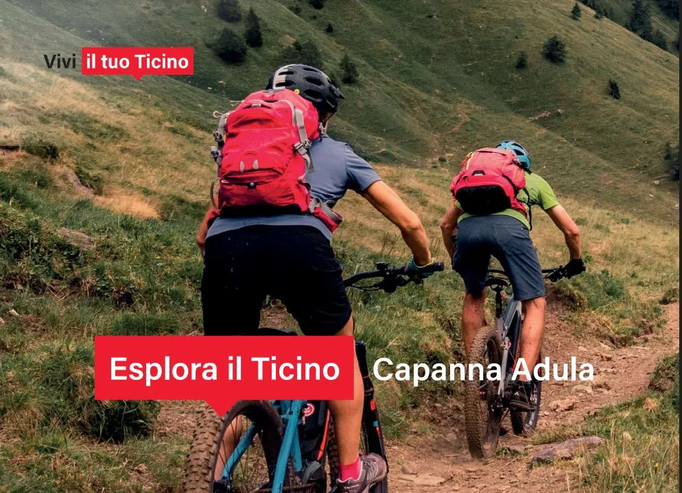

Sab. 21 settembre 2024 – Escursione per famiglie nella zona del Luzzone

Vivi il tuo Ticino, in collaborazione con CAS Ticino e Mountain Muses (Pierre Crivelli), organizza, sabato 21 settembre 2024, un’escursione nella zona del Luzzone.
La giornata ha come obiettivo quello di far vivere una esperienza nella natura nella regione del Luzzone con destinazione la capanna Motterascio. Durante la giornata verranno condivisi momenti ludici e coinvolgenti per conoscere meglio il territorio.
PROGRAMMA
Sabato 21 settembre
Diga Luzzone – Capanna Motterascio
Ritrovo: 8.30 al parcheggio della diga del Luzzone (Campo Blenio)
Lunghezza tappa: 11 km
Dislivello salita: 820 m
Dislivello discesa: 820 m
Quota massima: 2192 m
Durata: 5h 30′
Difficoltà: T3
Se vuoi partecipare iscriviti subito tramite il link sottostante. I posti sono limitati. E se sei un cliente BancaStato, scrivi a marketing@bancastato.ch segnalando che ti sei iscritto. Riceverai un buono da CHF 25 per acquistare cibi o bevande all’arrivo alla capanna Motterascio.
Altre notizie
Tutte le news
Sab. 30 novembre 2024 – Campionati Ticinesi Giovanili di Arrampicata
Il prossimo sabato 30 novembre tornano i campionati ticinesi giovanili di arrampicata! Anche quest’anno il CAS ha il piacere di partecipare con alcuni dei propri giovani atleti. Quest’anno l’evento si terrà alla…

Dom. 22 settembre 2024 – Escursione in MTB alla capanna Adula
Vivi il tuo Ticino, in collaborazione con CAS Ticino, organizza per domenica 22 settembre 2024 un’escursione in mountain bike alla Capanna Adula. PROGRAMMA Domenica 22 settembre Diga Luzzone – Capanna Adula Ritrovo…

Concorso Capanna Michela-Motterascio
La sezione Ticino del CAS apre il concorso per l’assegnazione della capanna Michela-Motterascio, in valle di Blenio, dalla stagione 2025. I dettagli del bando sono definiti nel capitolato pdf scaricabile. Termine di…